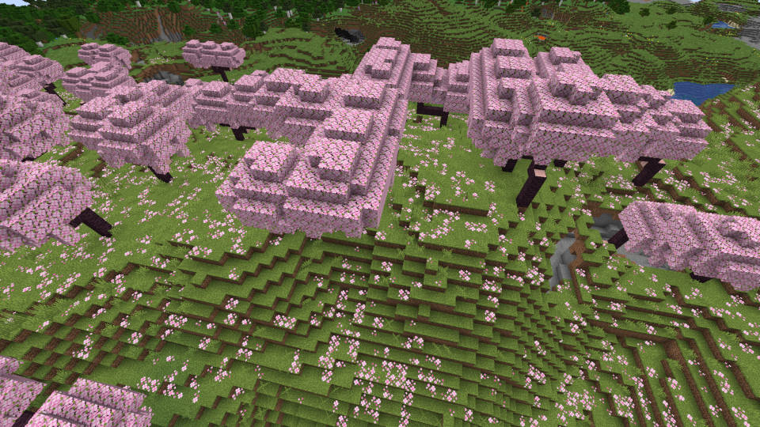
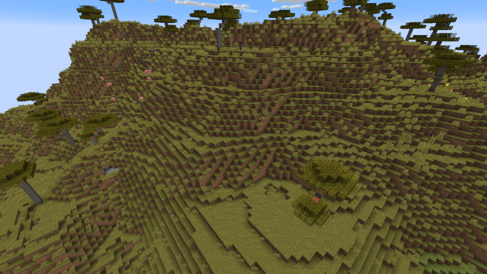
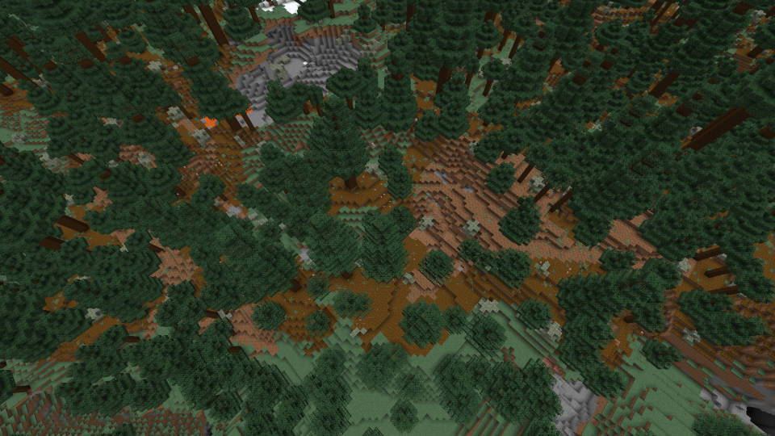
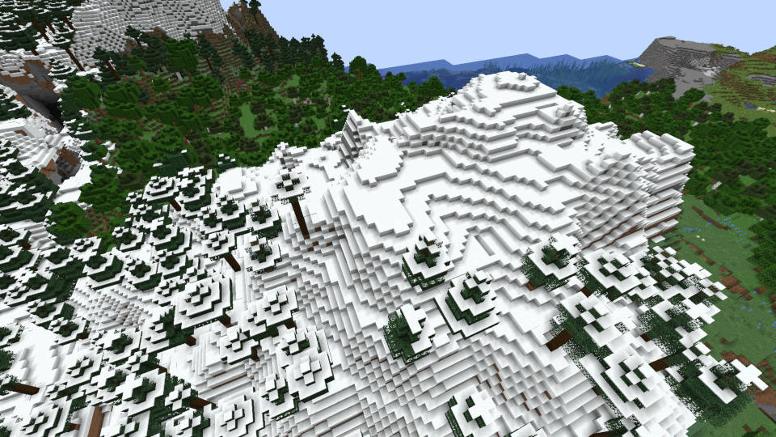
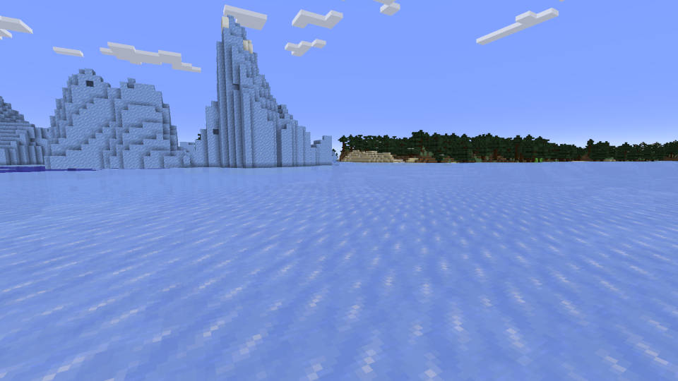
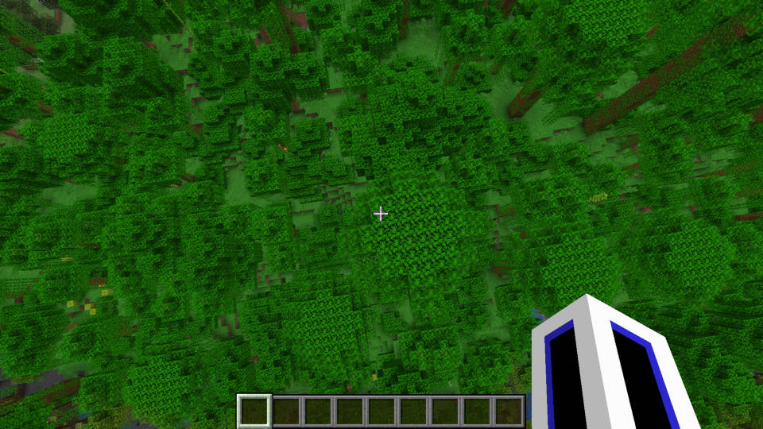
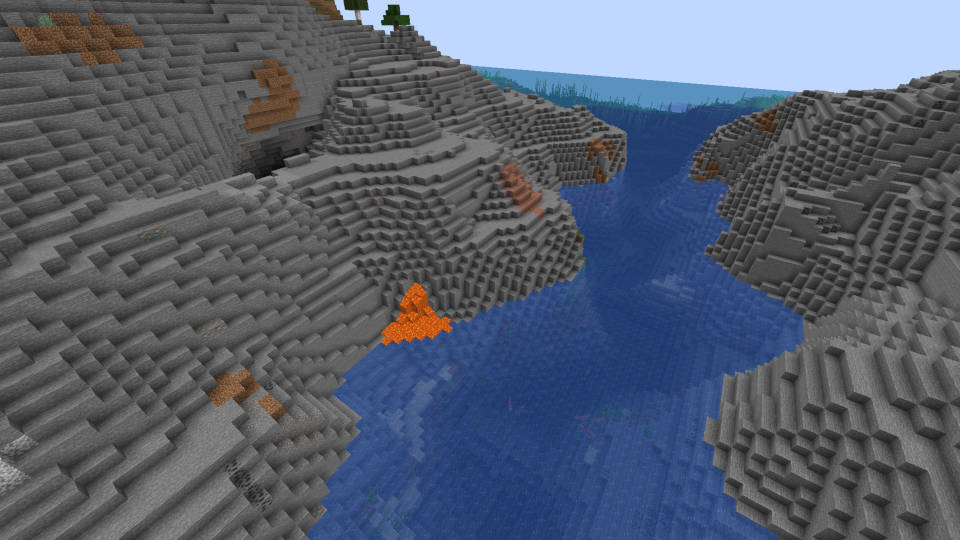
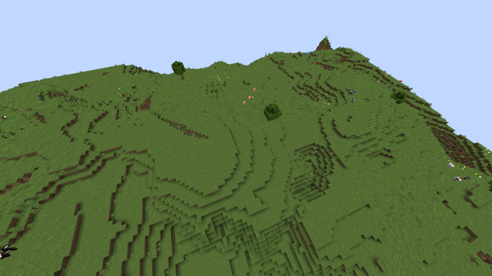

バイオームについて
いろんなバイオームがあって、いろんな冒険ができます。
これは、「サクラ」のバイオームです。
手に入れることげできるアイテムは、サクラの原木、サクラの花、サクラの葉です。
サクラの木は、建築にすごく役立つもので、たまに、サクラの村があります。見つけたら、無視しないほうがいいです。
これは、「アカシア」のバイオームです。
手に入れることげできるアイテムは、アカシアの原木、アカシアの葉です。
アカシアの木は、温かみのある建築に役立ちます。
これは、「タイガ」のバイオームです。
手に入れることげできるアイテムは、タイガの原木、タイガの葉、苔の生えた丸石です。
タイガの色は、濃いので、黒っぽい建築に、いいと思います。
この、雪のかぶっているところは、「雪のタイガ」のバイオームです。
手に入れることげできるアイテムは、タイガの原木、タイガの葉、雪玉です。
雪のタイガのバイオームは、高いところでタイガの近くにあります。
これは、「凍った海」のバイオームです。
手に入れることげできるアイテムは、氷、雪、水です。
氷や、雪ぐらいしかゲットできないので、行っても行かなくてもいいと思います。
これは、「ジャングル」のバイオームです。
手に入れることげできるアイテムは、ジャングルの原木、ジャングルの葉、カカオ豆です。
カカオ豆は、クッキーがつくれるので、カカオ豆を数スタック（６４粒）ぐらい集めたほうがいいと思います。
これは、「岩山」のバイオームです。
手に入れることげできるアイテムは、丸石、花崗岩、安山岩、土、砂利、石炭、鉄、銅、マグマです。
石、銅、鉄、石炭集めに役立ちます。洞窟もあるので、もぐってもいいと思います。
これは、「平原」のバイオームです。
手に入れることげできるアイテムは、土、小麦の種（草を刈ると30％ぐらいで出てくるもの）原木、花、肉(ヒツジ、豚、牛)です。
リスポーン地点は、ここが多いと思います。